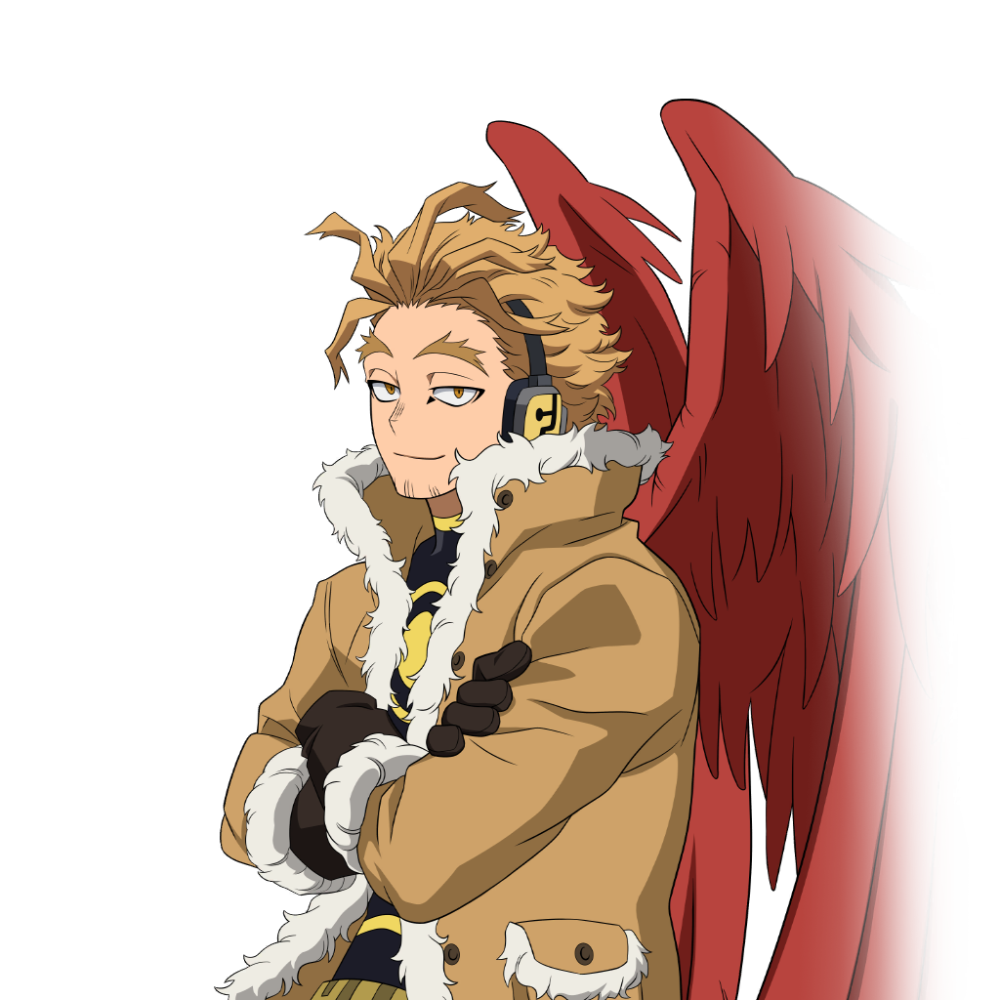

Su informacion principal
Nombre: Keigo Takami
Quirk: Alas Feroces

Quirk que le otorga a Hawks 2 Alas Grandes en su espalda que puede utilizar para volar y controlar cada una de sus plumas telequineticamente individualmente para diferentes funciones.
Wiki con informacion mas detallada de hawks